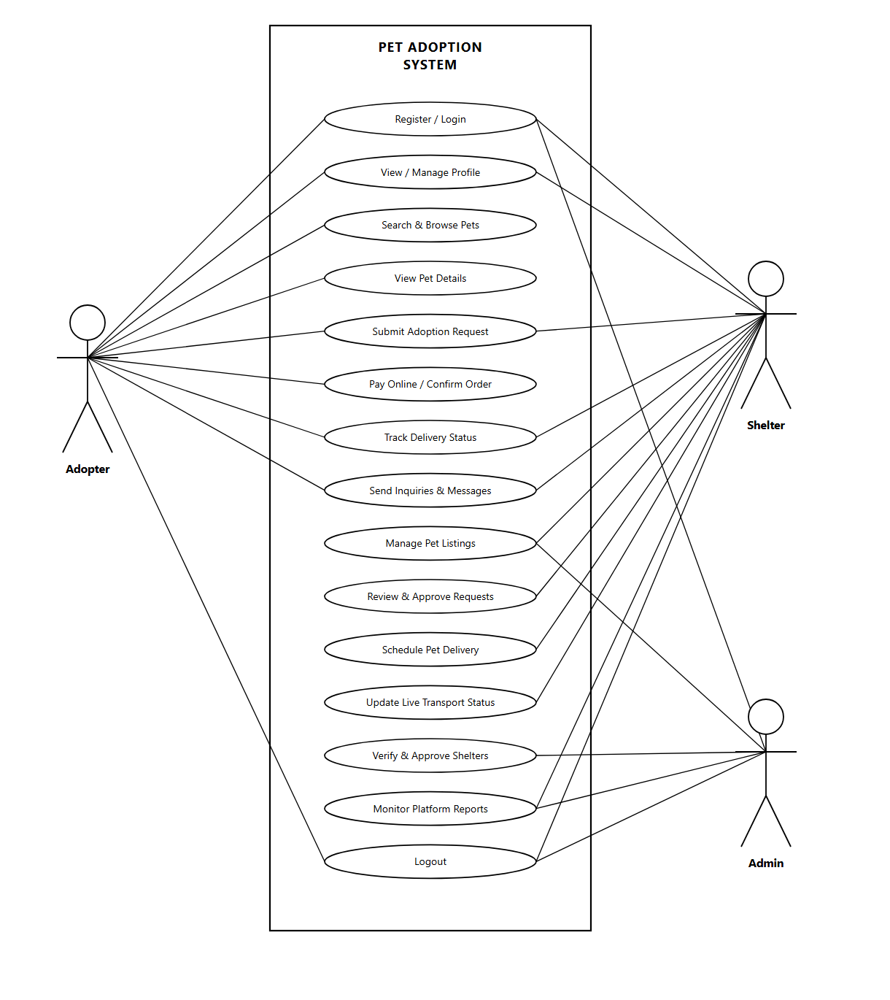
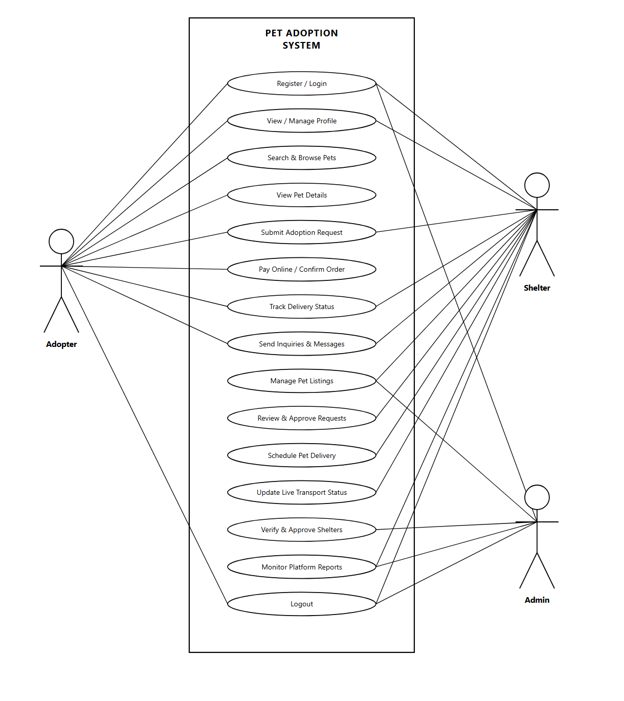
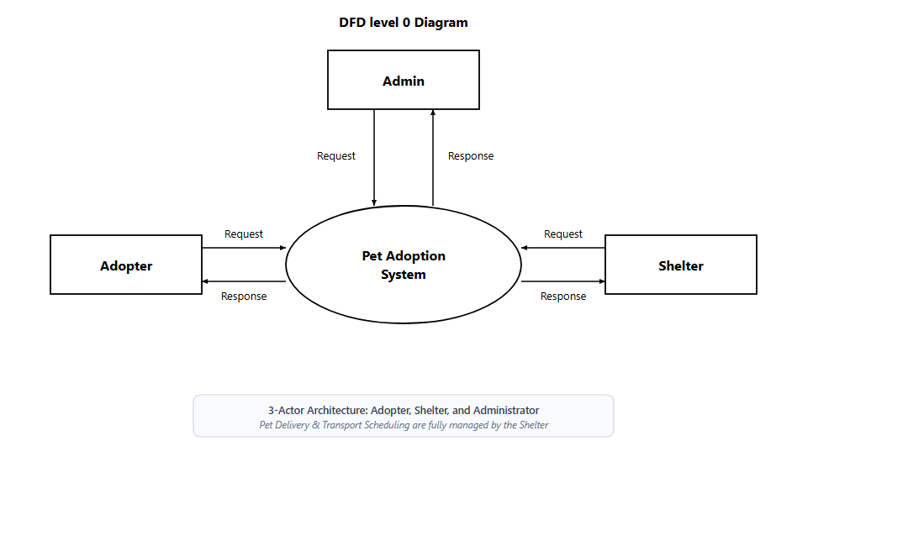
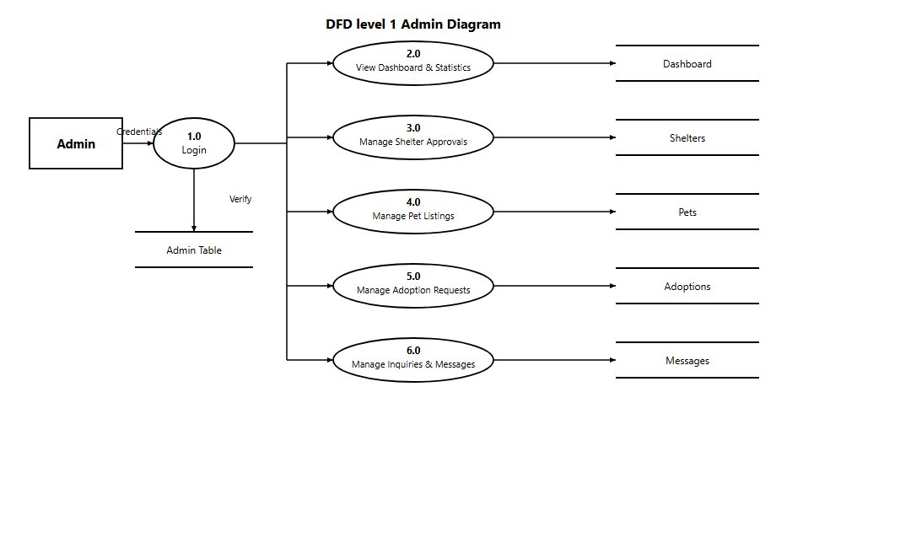
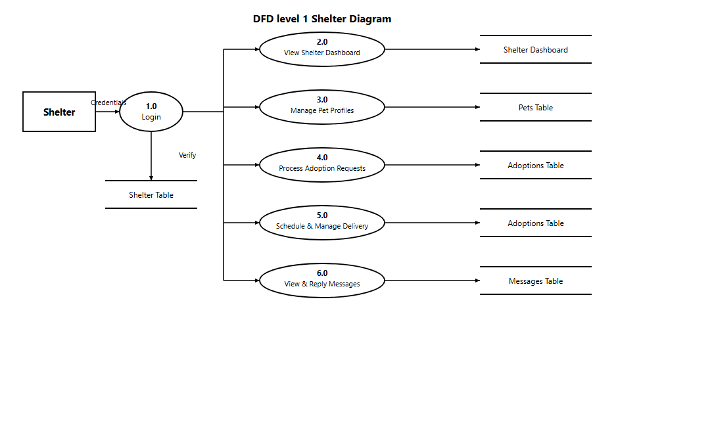
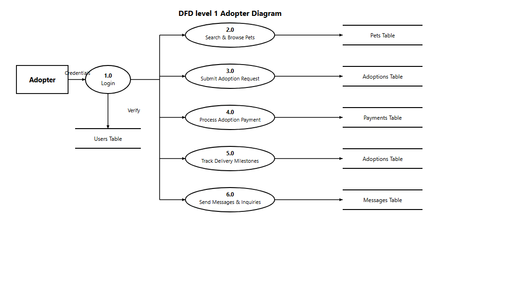
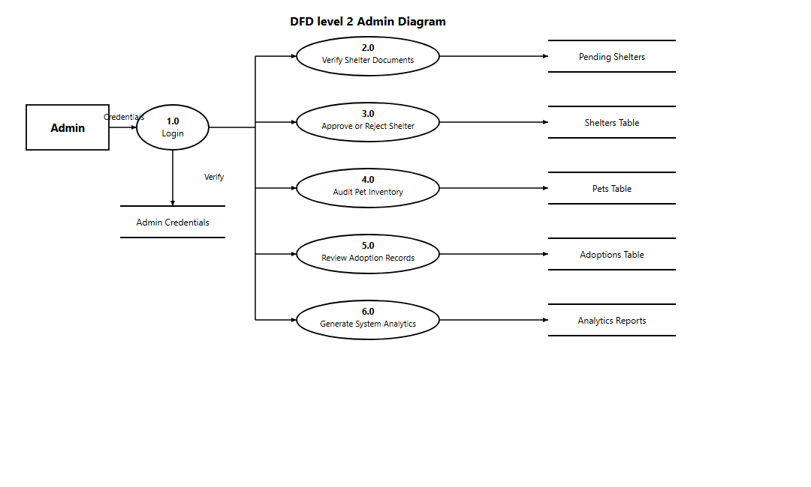
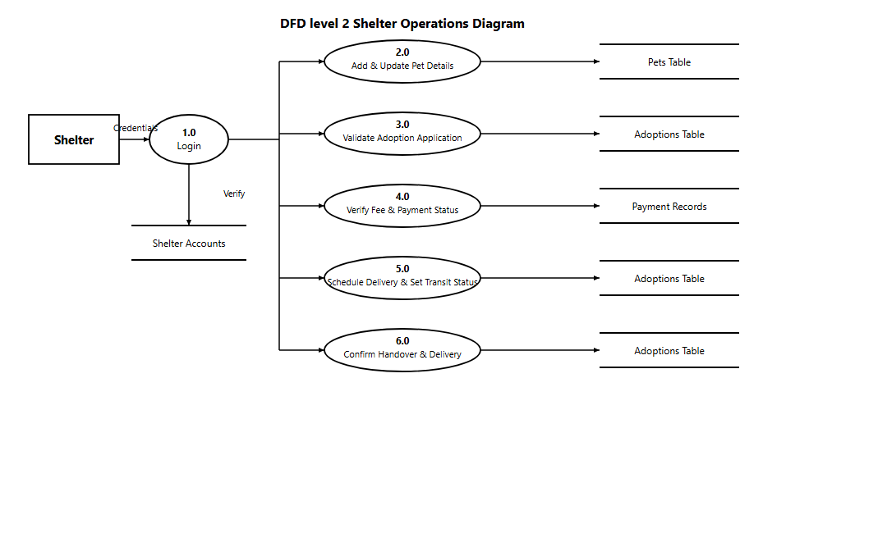

Complete UML Use Case Diagram and Data Flow Diagrams (DFD Level 0, Level 1, Level 2) generated in standard academic project format.

Directly models the 3-actor architecture: Adopter on the left, and Shelter and Admin on the right. Transport and delivery logistics are directly managed by the Shelter. Shows the boundary of the PET ADOPTION SYSTEM encompassing core use cases.
| Actor | Role in System | Associated Use Cases |
|---|---|---|
| Adopter | Primary end user looking to adopt pets | Register/Login, View Profile, Search Pets, Pet Details, Submit Request (Select Delivery Method: Home Delivery / Shelter Pickup), Pay Online, Track Transport, Messages, Logout |
| Shelter | Breeder / Animal Rescue Organization | Register/Login, View Profile, Submit/Review Requests, Messages, Manage Pet Listings, Approve Requests, Direct Delivery Scheduling & Status Updates, Platform Reports, Logout |
| Admin | Platform Administrator | Register/Login, Manage Pet Listings, Verify & Approve Shelters, Review Requests, Monitor Platform Reports, Logout |

A balanced arrangement featuring Adopter on the left, and Shelter and Admin on the right with shelter-managed delivery flows.

The Level 0 Context Diagram establishes the boundary of the Pet Adoption System with dual Request/Response flows across the 3 primary entities (Adopter, Shelter, Admin). Delivery scheduling and tracking are handled directly between Adopter, System, and Shelter.

Decomposes Admin functionality after login authentication against the Admin / Users Table.

Decomposes Shelter operations after login authentication against the Shelter / Users Table, including direct delivery scheduling, transport status updates, and pet handover management.

Decomposes Adopter workflows after login authentication against the Users Table, including selecting delivery method (Home Delivery or Shelter Pickup) during request submission and tracking delivery status.

Decomposes Admin shelter verification, approval, auditing, and platform report generation workflows.

Decomposes Shelter pet management, application review, fee check, direct delivery date scheduling, and transport status updates (Pending, Scheduled, In Transit, Delivered).